1 NFE per forecast step
VSF advances each forecast step with one velocity-field evaluation (NFE = 1), avoiding iterative denoising and achieving up to a 7× speedup over autoregressive diffusion.
Streaming Flow models temporal evolution directly in physical time, but its standard non-latent formulation produces a single trajectory from a fixed observed history. We introduce Variational Streaming Flow (VSF), which conditions the physical-time velocity field on a variational latent variable inferred from local dynamics during training and sampled from a prior at inference. VSF is trained with a generalized energy reconstruction for latent-conditioned velocities. Under aggregate posterior–prior alignment, its population counterpart controls the energy distance between the prior-predictive and true conditional velocity laws. Across deterministic and partially observed stochastic systems, VSF improves long-horizon forecasting and, as a JEPA world-model predictor, improves goal-directed planning.
VSF advances each forecast step with one velocity-field evaluation (NFE = 1), avoiding iterative denoising and achieving up to a 7× speedup over autoregressive diffusion.
Different latent codes let VSF generate multiple plausible futures from the same observed history. Holding each code fixed throughout a rollout helps preserve coherence as the dynamics branch.
VSF mitigates error accumulation over 1,000-step chaotic-system forecasts. Its accurate imagined rollouts support JEPA world model planning, improving average success by 7.34% across robotics tasks.
Stochastic Rössler forecasting
LeWM Cube planning
1 · Forecasting paradigm
Diffusion/flow models generate samples by transforming noise into clean samples through a series of iterative steps. For forecasting temporal sequences, this process can generate an entire trajectory at once or advance sequentially. Here we introduce four paradigms for forecasting with diffusion/flow models.
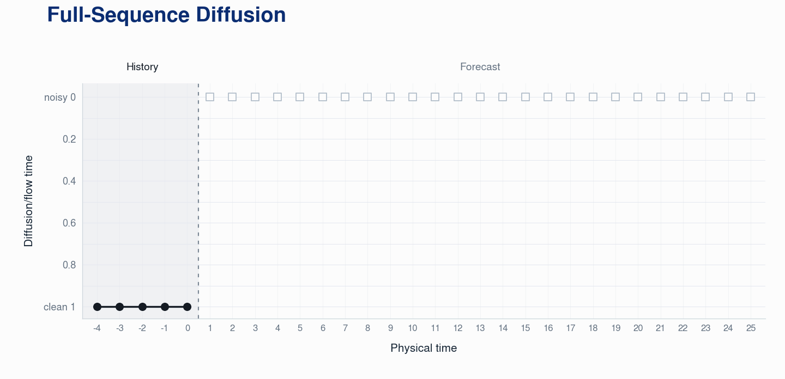
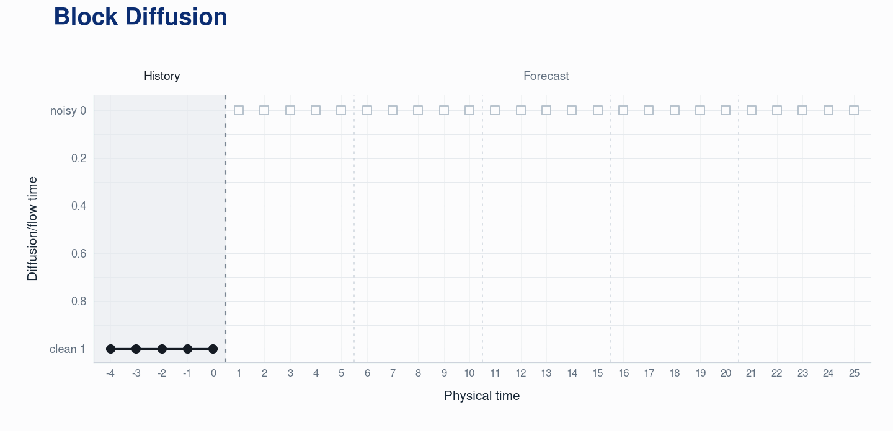
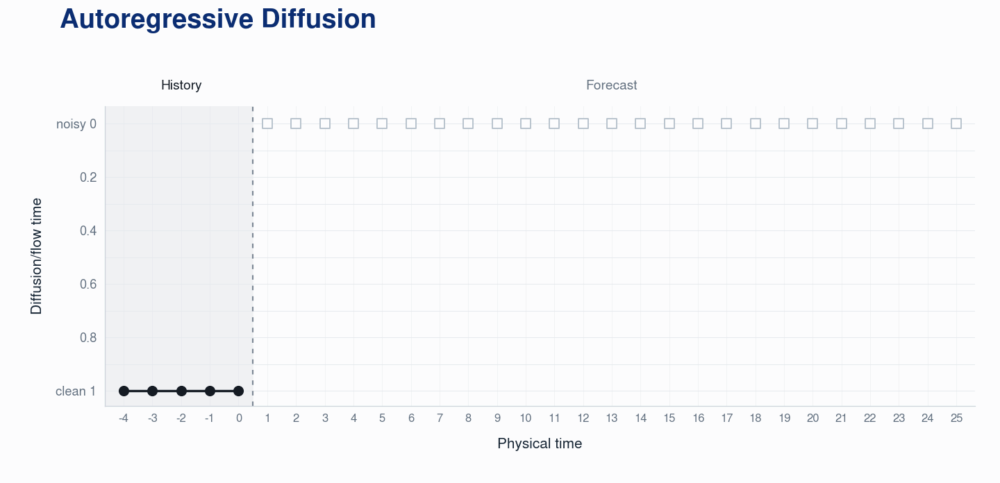
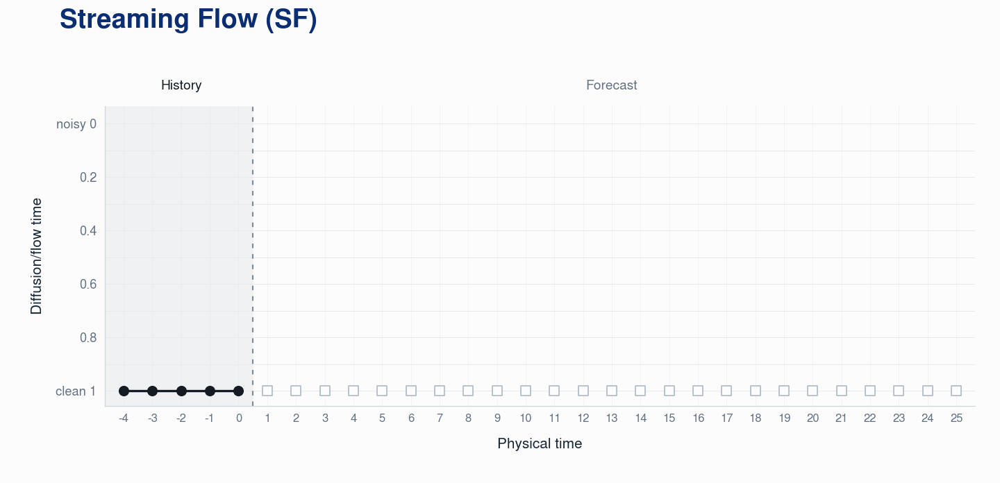
2 · Physical-time flow
Diffusion-style forecasting uses an inner generation process to create states at physical times. Streaming Flow removes that extra clock: advancing the learned dynamics advances the forecast itself.
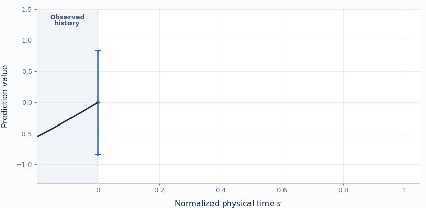
Construct noisy states around a clean trajectory. Their spread shrinks with physical time, so later states approach the path.
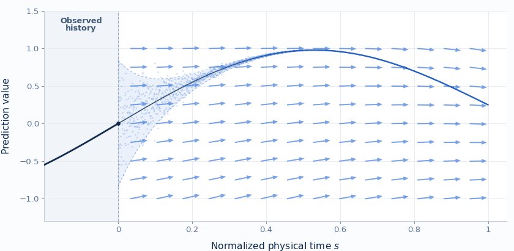
Fit the velocity field to local motion targets. It follows the trajectory while pulling nearby states back toward it.
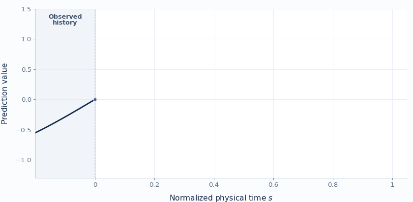
Start from the latest observation. At step k, the field reads normalized physical time sk and the observed and rolling history h, then advances the state directly.
Physical time × auxiliary denoising time
Physical time only
Streaming Flow removes the denoising loop, but standard SF still maps the same state and history to only one future.
3 · Bifurcation example
Standard non-latent Streaming Flow assigns one direction to each state and observed history, so the same input always produces one trajectory. In a bifurcation example, it must encode the future choice in tiny physical-state differences; making those differences smaller makes the rollout more sensitive to perturbations.
A deterministic velocity field cannot express several future motions from the exact same state and history.
Standard SF separates branches through small state differences, which can amplify small rollout errors in bifurcation.
One sampled code can select a continuation while both futures begin from the same physical state.
The top row shows the desired branching behavior; the bottom row shows why standard SF achieves it only by becoming sensitive to small state errors.
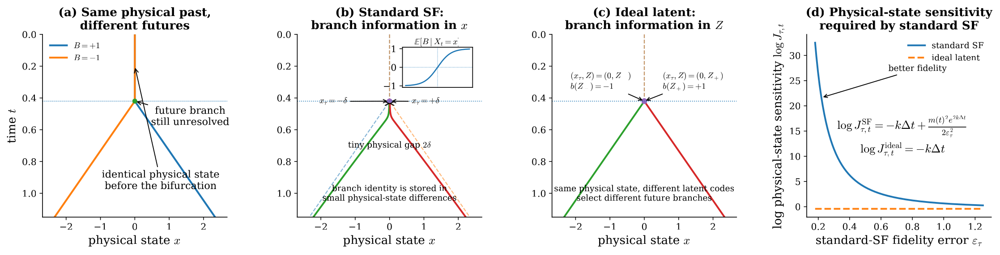
Reference dynamics
Latent resolution
Standard Streaming Flow
Fidelity–sensitivity tradeoff
Narrower tubes improve fidelity but raise sensitivity.
We next explain how VSF learns latent codes from observed velocity field in the next section.
Setup and Notation
Let B ∈ {−1,+1} index the two futures. Both trajectories remain at x = 0 through the bifurcation time τ; for t > τ, B = −1 and B = +1 select the negative and positive branches:
For both constructions, let q(t) = ṁ(t) + km(t) and σt = σ₀e−kt. The quantity Jτ,t is the derivative of the corresponding flow map with respect to its physical state at the split.
Standard Streaming Flow
At the population optimum, Standard SF must infer branch identity from the physical state x. For the complete assumptions and proof, see Proposition A.1 in the paper .
For fixed t > τ with m(t) > 0, improving split-time fidelity forces the physical-state sensitivity to diverge:
Ideal latent construction
Let Z ∼ N(0,1), with b(Z) = +1 for Z ≥ 0 and b(Z) = −1 for Z < 0. The latent code supplies the branch while both futures start from xτ = 0.
The construction is exact at the split and contracts physical-state perturbations because branch identity is carried by Z, not by tiny differences in x.
4 · Method
VSF generates future trajectories by evolving the latest observed state through a learned velocity field in physical time. Different latent values allow the model to generate multiple plausible futures from the same observed history. During training, an encoder learns which latent values explain the observed dynamics.
The forecast follows the learned latent-conditioned dynamics:
Construct a local state and physical velocity (xs, us).
Evaluate the corresponding physical-time velocities.
Optimize generalized energy reconstruction together with KL regularization toward p(z).
Sample z ∼ p(z) and retain it throughout the forecast.
Advance the predicted state directly in physical time.
Append generated states to the rolling history and refresh h at each segment boundary.
VSF uses a trajectory-level latent code z so the same context cs can represent different velocities us. It learns their conditional distribution by marginalizing over the latent code:
VSF evaluates M latent-conditioned velocity samples together using generalized energy reconstruction:
A variational encoder infers z from the motion observed during training. If that code does not fully separate the possible futures, MSE averages the unresolved velocities toward their conditional mean, v*(c, z) = E[U | C = c, Z = z]. The result can fall between valid motions.
The first term rewards accuracy against the observed velocity; the pairwise term accounts for the spread among samples. The full objective adds KL regularization to keep the training-time codes close to the prior used for forecasting:
The plots below show how the training objective scores exact, symmetric, and biased predictions.
We construct a two-branch example to make q̄φ(z | c) = p(z) concrete:
Objective type. Replacing Gaussian reconstruction with LES makes the final loss a KL-regularized distributional objective.
5 · Results
We evaluate 1,000-step forecasts on fully observed deterministic systems and partially observed stochastic systems.
The tables summarize average errors; the animations show how each forecasting method advances along individual rollouts.
5.1
All state variables are observed. We report pointwise forecast accuracy and compare complete long-horizon trajectories.
Scroll horizontally to view all metrics.
| Model | Double pendulum | Rössler | Lorenz | RT | ||||||
|---|---|---|---|---|---|---|---|---|---|---|
| CRPS ↓ | RMSE ↓ | MAE ↓ | CRPS ↓ | RMSE ↓ | MAE ↓ | CRPS ↓ | RMSE ↓ | MAE ↓ | ||
| Block diffusion | 0.46 ± 0.07 | 0.91 ± 0.14 | 0.47 ± 0.07 | 0.29 ± 0.13 | 0.54 ± 0.26 | 0.29 ± 0.13 | 0.31 ± 0.12 | 0.42 ± 0.18 | 0.33 ± 0.12 | 30.2 |
| AR diffusion | 0.43 ± 0.00 | 0.96 ± 0.01 | 0.59 ± 0.01 | 0.35 ± 0.06 | 1.00 ± 0.13 | 0.53 ± 0.08 | 0.86 ± 0.04 | 1.96 ± 0.06 | 1.50 ± 0.06 | 78.2 |
| Rectified flow | 0.53 ± 0.07 | 1.08 ± 0.11 | 0.67 ± 0.07 | 0.40 ± 0.07 | 0.85 ± 0.20 | 0.48 ± 0.08 | 1.46 ± 0.89 | 2.69 ± 1.46 | 1.94 ± 1.14 | 41.1 |
| DeepAR | 0.58 ± 0.00 | 1.07 ± 0.00 | 0.68 ± 0.00 | 0.17 ± 0.04 | 0.54 ± 0.05 | 0.21 ± 0.05 | 10.30 ± 0.22 | 12.42 ± 0.13 | 10.88 ± 0.13 | 3.9 |
| SF | 2.12 ± 0.87 | 9.18 ± 5.17 | 2.12 ± 0.87 | 0.16 ± 0.07 | 0.34 ± 0.18 | 0.16 ± 0.07 | 1.42 ± 0.14 | 2.75 ± 0.31 | 1.42 ± 0.14 | 6.4 |
| SF (perturb.) | 1.83 ± 0.86 | 8.38 ± 5.18 | 1.96 ± 0.89 | 0.11 ± 0.05 | 0.34 ± 0.18 | 0.16 ± 0.07 | 1.39 ± 0.14 | 2.75 ± 0.31 | 1.42 ± 0.14 | 6.4 |
| Chronos-2 | 0.78 ± 0.00 | 1.50 ± 0.02 | 0.96 ± 0.01 | 1.98 ± 0.00 | 4.11 ± 0.02 | 2.62 ± 0.01 | 13.50 ± 0.06 | 28.19 ± 1.14 | 25.22 ± 0.85 | 0.8 |
| Chronos-2 (calib.) | 0.62 ± 0.00 | 1.16 ± 0.00 | 0.74 ± 0.00 | 1.91 ± 0.00 | 3.91 ± 0.02 | 2.52 ± 0.01 | 2.39 ± 0.02 | 6.01 ± 0.27 | 4.54 ± 0.27 | 0.4 |
| VSF Ours | 0.25 ± 0.07 | 0.71 ± 0.11 | 0.33 ± 0.08 | 0.03 ± 0.00 | 0.13 ± 0.01 | 0.05 ± 0.00 | 0.16 ± 0.02 | 0.25 ± 0.02 | 0.19 ± 0.01 | 7.2 |
Values are mean ± population standard deviation across three seeds.
Qualitative comparison

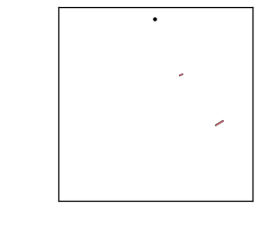
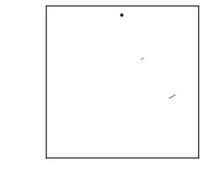
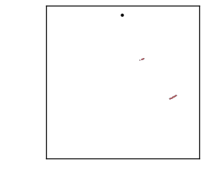

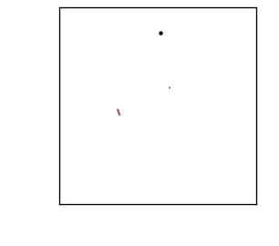
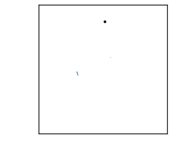
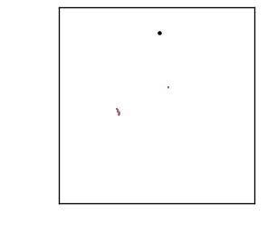

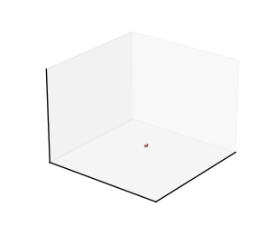

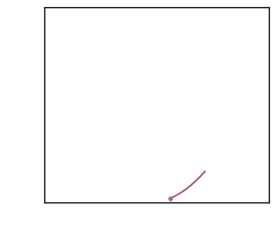
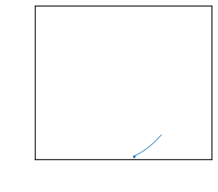
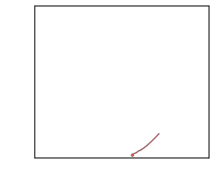
5.2
Rössler and Lorenz are partially observed parameter-mixture systems. We evaluate the conditional distribution of complete future trajectories.
Scroll horizontally to view all metrics.
| Model | Rössler | Lorenz | RT | ||||||
|---|---|---|---|---|---|---|---|---|---|
| CME ↓ | CSE ↓ | W1 ↓ | ED ↓ | CME ↓ | CSE ↓ | W1 ↓ | ED ↓ | ||
| Block diffusion | 0.16 ± 0.02 | 0.72 ± 0.08 | 8.88 ± 1.05 | 12.67 ± 1.71 | 0.20 ± 0.01 | 0.93 ± 0.01 | 19.88 ± 0.28 | 13.73 ± 0.45 | 21.8 |
| AR diffusion | 0.20 ± 0.03 | 4.63 ± 0.40 | 16.21 ± 1.12 | 11.46 ± 2.06 | 0.22 ± 0.05 | 0.95 ± 0.14 | 25.64 ± 3.10 | 5.60 ± 1.54 | 42.4 |
| Rectified flow | 0.22 ± 0.09 | 0.89 ± 0.30 | 12.60 ± 4.44 | 16.72 ± 8.72 | 0.26 ± 0.03 | 0.60 ± 0.12 | 19.74 ± 1.63 | 13.24 ± 2.69 | 19.4 |
| DeepAR | 0.20 ± 0.02 | 0.61 ± 0.02 | 11.81 ± 0.80 | 15.62 ± 1.57 | 2.14 ± 0.49 | 2.61 ± 0.27 | 131.84 ± 15.99 | 138.30 ± 45.71 | 1.2 |
| SF | 0.06 ± 0.02 | 1.00 ± 0.00 | 4.53 ± 0.67 | 5.00 ± 1.34 | 1.04 ± 0.56 | 1.00 ± 0.00 | 58.12 ± 24.23 | 89.84 ± 48.45 | 7.5 |
| SF (perturb.) | 0.06 ± 0.02 | 1.12 ± 0.23 | 4.92 ± 0.84 | 2.28 ± 0.82 | 0.68 ± 0.33 | 1.33 ± 0.75 | 53.62 ± 25.69 | 35.78 ± 19.55 | 6.6 |
| Chronos-2 | 1.28 ± 0.06 | 47.87 ± 1.63 | 90.54 ± 3.86 | 94.84 ± 0.79 | 6.84 ± 0.17 | 37.49 ± 1.66 | 411.32 ± 9.43 | 342.98 ± 1.87 | 0.3 |
| Chronos-2 (calib.) | 1.20 ± 0.06 | 61.83 ± 2.09 | 101.69 ± 4.61 | 93.23 ± 0.20 | 1.44 ± 0.06 | 10.53 ± 0.49 | 111.81 ± 3.11 | 64.97 ± 0.79 | 0.1 |
| VSF Ours | 0.04 ± 0.01 | 0.36 ± 0.14 | 2.62 ± 0.38 | 1.28 ± 0.42 | 0.19 ± 0.03 | 0.50 ± 0.21 | 15.95 ± 5.64 | 5.19 ± 0.93 | 6.7 |
Values are mean ± population standard deviation across three seeds.
Generated trajectories
Ground truth

VSF
Standard SF
Block diffusion
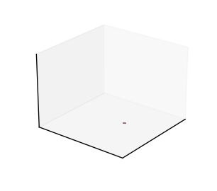
AR diffusion
Generated trajectories

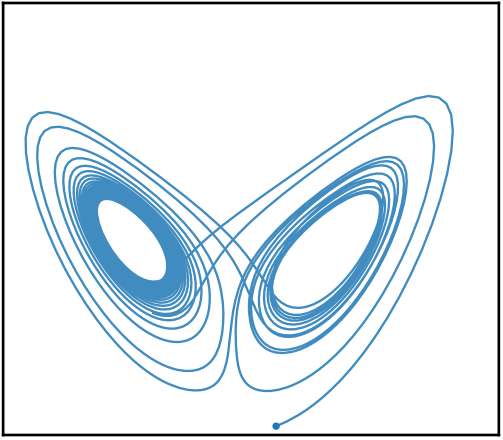

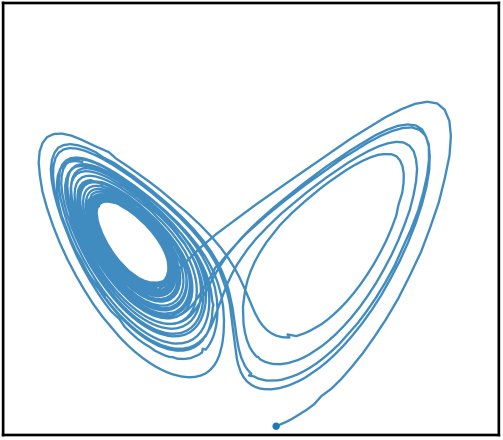

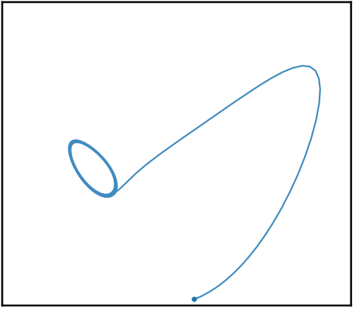

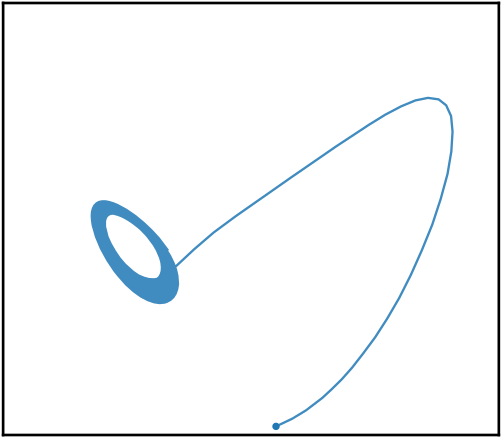
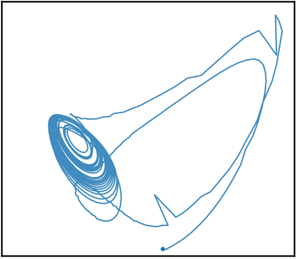

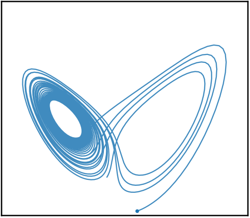
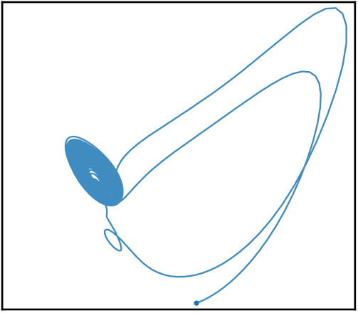
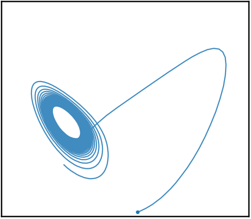
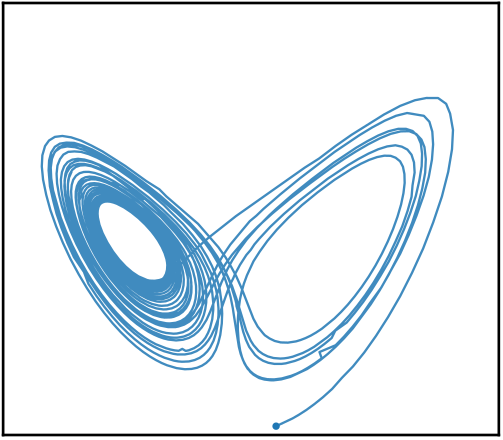

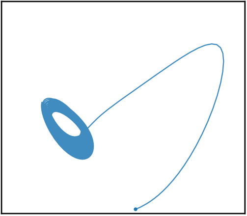

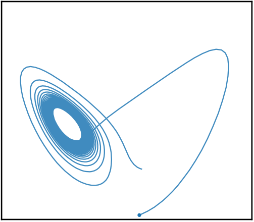
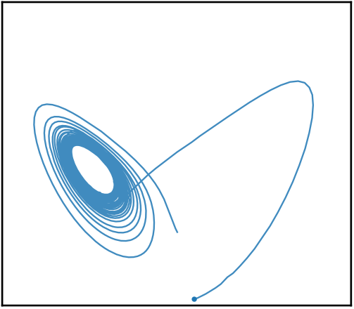

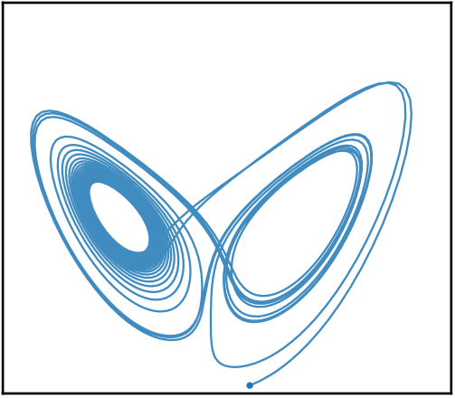

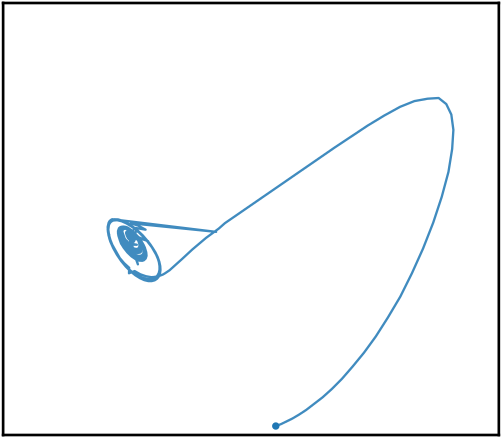
6 · World-model planning
Forecast quality matters for control when a planner uses imagined trajectories to compare actions. We next test VSF inside a JEPA-based world model. We replace its deterministic autoregressive predictor with action-conditioned VSF while keeping the pretrained JEPA representation fixed. For each candidate action sequence, the Cross-Entropy Method (CEM) evaluates the predicted physical-time trajectory and selects the plan whose terminal state best matches the encoded goal.
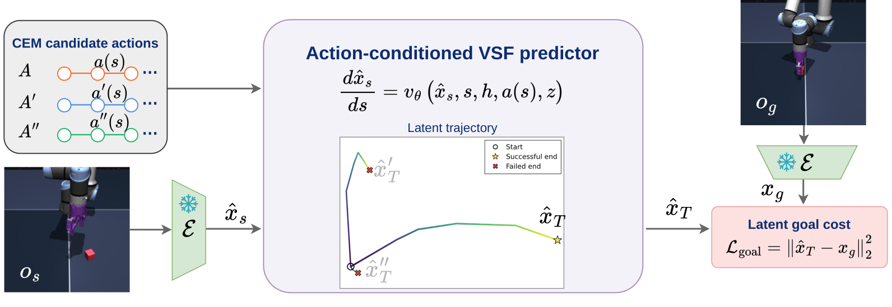
Scroll horizontally to see every task and metric.
| Method | PushT | Cube | TwoRoom | Reacher | ||||
|---|---|---|---|---|---|---|---|---|
| Success ↑ | RMSE ↓ | Success ↑ | RMSE ↓ | Success ↑ | RMSE ↓ | Success ↑ | RMSE ↓ | |
| AR predictor | 84.7 ± 4.1 | 0.28 ± 0.01 | 69.3 ± 2.5 | 0.80 ± 0.05 | 78.7 ± 9.0 | 0.67 ± 0.03 | 61.3 ± 8.2 | 1.06 ± 0.01 |
| SF predictor | 88.0 ± 2.8 | 0.30 ± 0.04 | 76.7 ± 0.9 | 0.64 ± 0.02 | 76.7 ± 8.2 | 0.59 ± 0.05 | 49.3 ± 5.0 | 1.13 ± 0.03 |
| VSF predictor Ours | 92.7 ± 2.5 | 0.27 ± 0.03 | 80.0 ± 1.6 | 0.65 ± 0.08 | 82.7 ± 5.0 | 0.58 ± 0.01 | 68.0 ± 0.0 | 1.03 ± 0.02 |
Plan 1 and Plan 2 are two successive planning rounds toward the same goal.
Predictions that stay close to the dashed ground-truth latent trajectory help CEM rank candidate action sequences more accurately. In the examples below, the AR prediction diverges and the rollout fails, whereas VSF tracks the ground truth more closely and succeeds.
Push the T-shaped block to the demonstrated goal configuration; both the point pusher and block poses define the goal.
Use the UR5e gripper to pick up the cube and place its center at the target location.
Guide the red point agent from one room to a target in the other through the single doorway.
Move the planar two-link arm to match the complete target joint configuration.